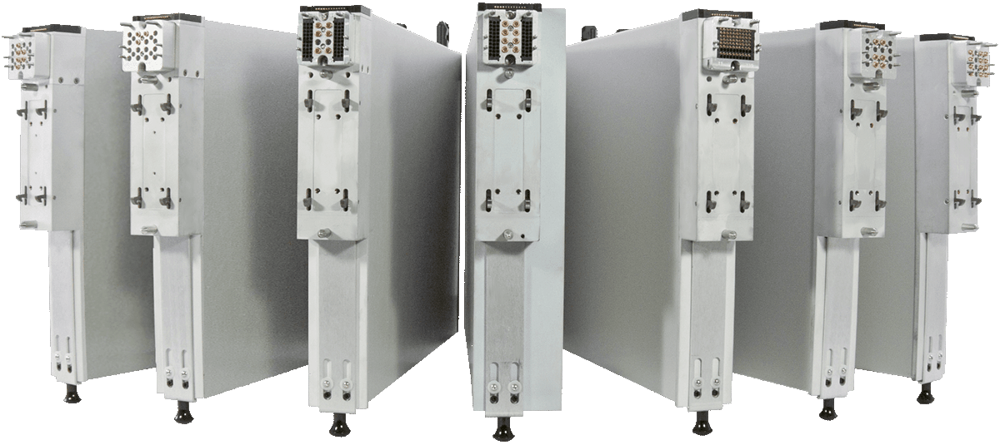

Measure the Difference

At the heart of Cassini’s configurable architecture are Test Instrument Modules (TIMs). These air-cooled,
shielded instruments provide all of the source, receive, measure, and signal processing capability for a
broad
range of DC,digital, mixed-signal, RF, and millimeter wave applications.
Browse Instruments »

Form that Follows Function
With Test Instrument Modules, we created an instrument design that marries modular test capability with robust production interfaces and interconnect. The light and portable form factor makes for easy swapping and servicing while the rugged exterior guarantees durability and reliability on the production floor.
DC

Digital

RF

mmWave

Blind-Mate Interfaces
It's the missing piece that transforms a set of modular instruments into a modular test system. The blind-mate interface creates a unified instrument plane on the testhead for integrating resources to each other and to a DUT. The setup provides robust DC, Digital, and RF connections while enabling better access to resources during development, quicker instrument servicing and calibration, and fast DUT interface changeout in production.


Configure a System in Seconds
Each instrument incorporates an easy to use latch system for adding and removing instruments. The integrated lock ensures precision instrument alignment and secure connection when docking to the testhead. This not only allows the tester to be configured quickly for specific applications but enables incremental capability extension, multi-site expansion, and rapid field servicing.
Learn More
Do More, Use Less
Efficiency doesn't always have to be about pin utilization. Test instrument modules were designed to be much more energy conscious, using less than 100 watts on average. The lower power consumption means lower operating temperatures and simpler thermal management systems. Built-in fans and optimized air-channels keep instruments at a lower and more stable operating temperature, both of which contribute to improved measurement stability and longer product life. Learn More
Accelerate RF Measurements
Test set and receiver instruments incorporate our proprietary universal-channel, vector RF architecture called SyRF Core. The culmination of 20 years of advanced research and development, the microwave design provides unparalled measurement speed and accuracy up to 90 GHz for a wide range of applications.
- Multi-Port S-Parameters
- Distortion Measurements
- Modulation/Demodulation Test